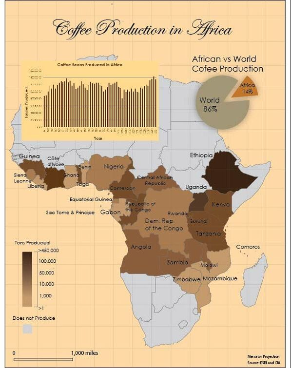
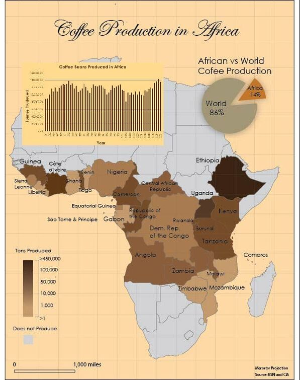
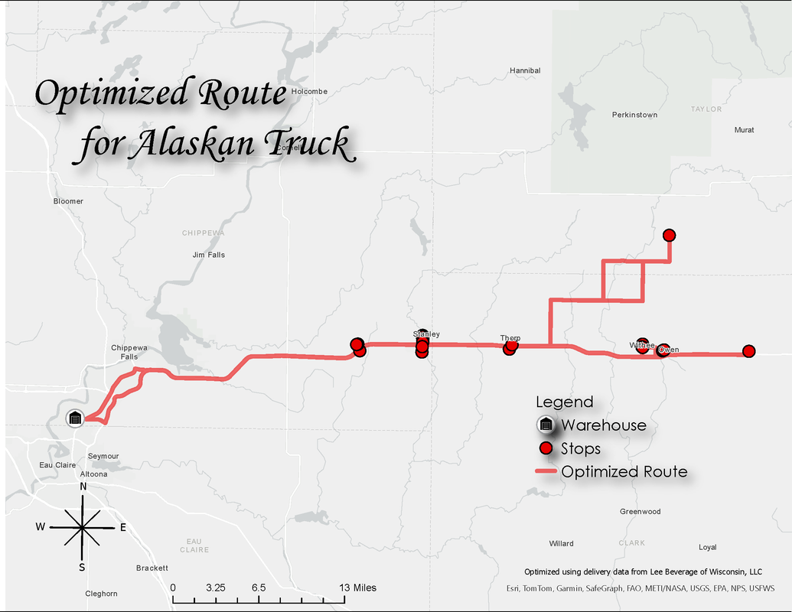
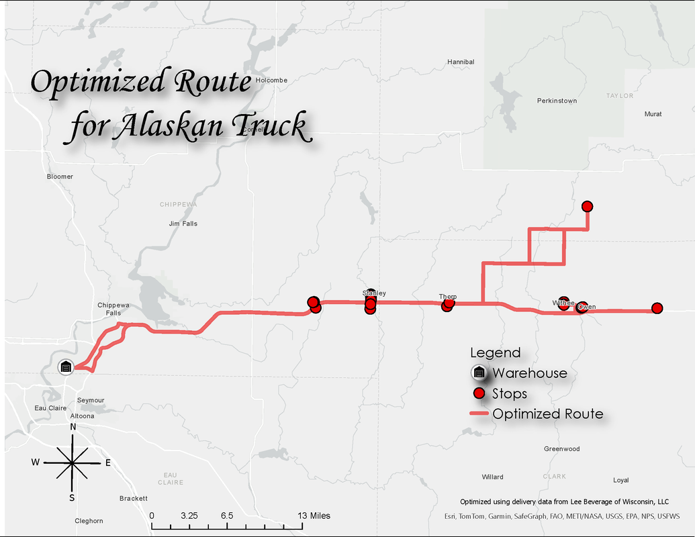
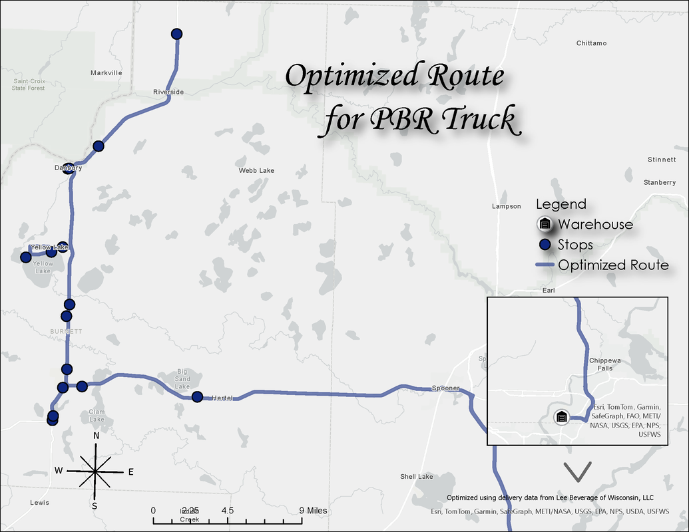
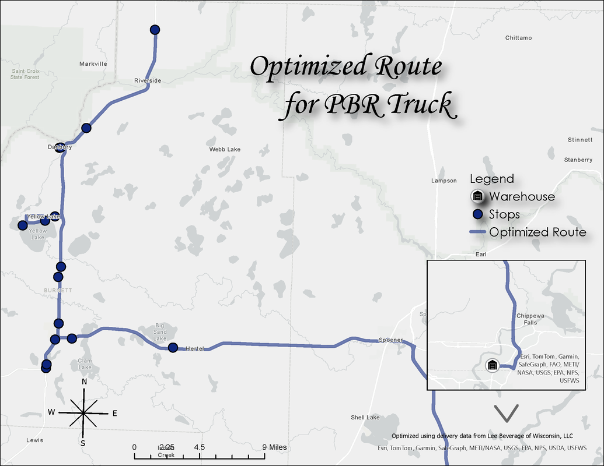

Spatial Analysis & GIS
This section highlights several GIS spatial analysis projects I completed using Python, GeoPandas, and ArcGIS Pro. These projects demonstrate skills in geoprocessing, spatial joins, buffering, data transformations, and thematic mapping.
A Geospatial Analysis of Crime in Lincoln, NE
For this project, I created an ArcGIS StoryMap that analyzes crime patterns in Lincoln, Nebraska using data from August 2022. The StoryMap combines reference maps, interactive web maps, and data visualizations to explore where crime was concentrated, how different crime types were distributed across the city, and how patterns varied by neighborhood and time of day. I incorporated charts, summary statistics, and spatial context to highlight key hotspots and trends. This project demonstrates my ability to use ArcGIS Online, StoryMaps, and spatial analysis techniques to communicate crime data in a clear, accessible, and visually engaging format.
Choropleth Classification Methods: Mapping Percent Democratic Vote in Texas
In this project, I created three choropleth maps showing the percentage of Democratic voters by Texas county in the 2020 presidential election. Each map used a different data classification method—Natural Breaks, Equal Interval (range-based), and Quantile—to compare how classification choices influence the visual interpretation of political data. The analysis highlighted how each method distributes counties across classes, how patterns of higher Democratic support appear around major cities and near the U.S.–Mexico border, and why some methods (such as Quantile) can misrepresent data ranges. The Equal Interval map provided the most accurate representation of Democratic-leaning counties for this dataset.
Minnesota Unemployment Multivariate Map
For this assignment I was tasked with making a multivariate map portraying possible connections between two datasets at the Minnesota county level. No data was provided, with the exception of shapefiles for the MN counties, and all was collected by the United States Census Bureau in my map.
Clustering Analysis of Spatiotemporal Point Data
In this project, I explored several spatial clustering methods using ArcGIS Pro to analyze patterns in check-in data and crash locations involving cyclists. I worked through the “Identify popular places with spatiotemporal data science” tutorial, which included aggregating point data, evaluating spatial significance using Moran’s I, and applying clustering tools such as DBSCAN, HDBSCAN, and Multi-scale/OPTICS to compare how different parameters influence cluster detection. I then applied similar techniques to a dataset of bicycle-related crashes, testing multiple clustering configurations to identify statistically meaningful hotspots. The final analysis highlighted where cyclist crashes were most concentrated and provided recommendations on which locations the city should prioritize for safety improvements.
Nature Walk Dashboard
Using Survey123 my classmates and I took pictures of tree species, animals, and other things on the University of Wisconsin Eau Claire campus. I used the data from the pictures we took to create a dashboard. The dashboard features 6 different interactive attributes.
Cartographic Design Gallery
A collection of thematic, quantitative, and reference maps created using ArcGIS Pro. These examples highlight layout design, symbology, labeling, and effective visual communication techniques. Use the arrows below to browse the gallery.


 



 

 



Programming & Automation
I use Python to automate geospatial workflows, clean and prepare data, and build repeatable analysis tools. The scripting reports below document some of the GIS automation work I have done in courses and independent projects.
Python Geospatial Analysis Lab – Stream Networks and Environmental Data
In this project, I used Python, Pandas, and GeoPandas to explore and map several environmental datasets. I analyzed a national tornado dataset by filtering events with injuries and creating scatterplots and histograms to look at spatial and yearly trends. I also worked with stream data from multiple Wisconsin counties, reprojecting the datasets and mapping them with GeoPandas and Contextily basemaps. The project ended with side-by-side comparison maps showing differences in stream networks across counties. This work helped build my skills in Python-based mapping, data cleaning, and basic geospatial analysis.
Python Web Mapping & Geospatial Data Processing with Folium
In this project, I used Python, GeoPandas, and Folium to build interactive web maps and work with real geospatial datasets. I created maps with multiple basemaps, labeled point markers, and layer controls, and completed exercises on displaying GeoSeries objects and making choropleth maps. I also downloaded tornado and county datasets, reprojected them into EPSG:3070, clipped the tornado data to Wisconsin, and displayed the results on a Folium map using red markers for fatal tornadoes and blue markers for non-fatal ones. This project helped me build skills in web mapping, coordinate transformations, and basic geospatial processing in Python.
Python Spatial Analysis: Ice Age Trail & Trout Spring Ponds
In this project, I used Python and GeoPandas to analyze two Wisconsin-focused datasets: the Ice Age Trail and DNR trout spring ponds. For the Ice Age Trail, I read county and trail datasets, worked with appropriate projected coordinate systems for Wisconsin, calculated trail segment lengths, identified intersecting counties with a spatial join, and mapped the trail along with counties that contain it. I also summarized trail length by county in miles. In the second part, I analyzed trout spring ponds by joining point data to county polygons, counting ponds per county, listing counties in descending order by pond count, and creating a graduated color map to visualize the distribution of trout spring ponds across the state. This project strengthened my skills in spatial joins, length and count summaries, and basic thematic mapping in Python.
Shoreline Buffer Analysis: Evaluating No-Wake Designation for Club Lake
In this project, I evaluated whether Club Lake in Bayfield County should be classified as a slow-no-wake lake under Wisconsin’s updated boating regulations. Using geospatial analysis, I applied a 100-foot shoreline buffer to the lake polygon and calculated the remaining open-water area available for high-speed boating. The goal was to determine whether the lake still contained at least 50 acres beyond the buffered zone, as required by the Wisconsin Conservation Congress resolution. This analysis helped assess boating safety, potential congestion, and environmental impacts on smaller lakes while demonstrating practical use of buffer operations, area calculations, and policy-driven spatial evaluation.
Urban Planning
This section highlights planning work completed as part of my Urban & Regional Planning coursework, including collaborative design, zoning analysis, and policy development. These projects demonstrate my ability to combine GIS with planning principles to support community development and land-use decision-making.
Planned Unit Development (PUD) Proposal – Manitowoc, Wisconsin
As part of a team project, I helped develop a comprehensive Planned Unit Development (PUD) proposal for the City of Manitowoc. Our work included analyzing existing land uses, reviewing zoning requirements, designing alternative development scenarios, and proposing a mixed-use plan that balanced residential, commercial, and community needs. The final report incorporated site analysis maps, land-use diagrams, demographic context, and recommendations that aligned with local planning goals. This project strengthened my experience in collaborative planning, zoning interpretation, and integrating GIS with long-range land-use planning.